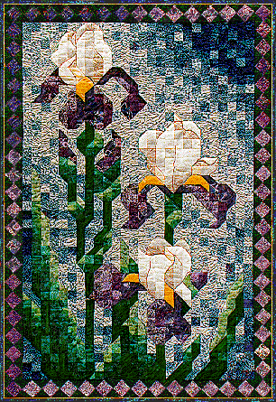

Iris MosaicIris Mosaic
Iris MosaicIris Mosaic
| #P111..........$7.95 31" X 45" The quilt pictured here is actually the second Iris Mosaic I have made. In my original idea the blues were dark around the iris and faded to light. Unfortunately, the quilt looked as though it's name should be Three Big Cotton Balls Mosaic. One of my options was to make the iris all one color. I didn't want to do that. The purple and white iris were from my Mother's garden. And they reminded me of my Grandmother's garden. She always had tons of bearded iris! One of my favorites! Now I had to remake the quilt and rewrite the pattern, reversing the blues. I'm so glad I didn't have to redo everything a third time! Elegant and stately purple and white iris will brighten any room. |
 Copyright 1995, Jane L. Kakaley |